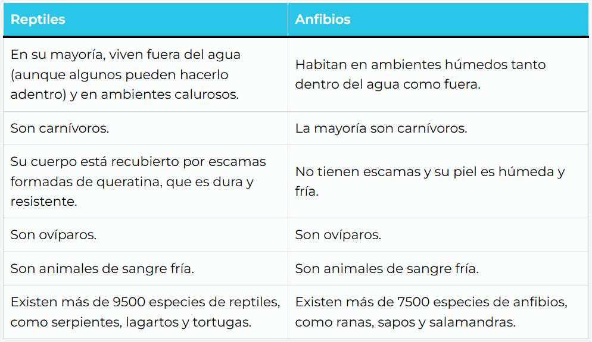

Actividad
Cuadro comparativo
- Llenar de el cuadro según corresponda.
| Sistema Operativo | Versión o distribución | Características (Estructura, funcionalidad y proposito) | Tipo de licencia |
Lectura facilitada
¿Cómo hacer un cuadro comparativo?
Los principales pasos para hacer un cuadro comparativo son:
- Buscar información. Se deben consultar fuentes confiables, para contar con información clara y verificada, que permita conocer a fondo cada uno de los elementos a analizar y las variables o características que los identifican.
- Identificar los elementos a comparar. Antes de comenzar a confeccionar el cuadro, se debe saber cuáles y cuántos elementos van a ser comparados.
- Determinar las variables o categorías. Se deben investigar y anotar qué variables o características se van a comparar. ¿Se van a buscar sus semejanzas? ¿Sus diferencias? ¿Las características principales de cada uno?
- Hacer una lista de las características. Teniendo en cuenta las variables o las categorías, se debe anotar cómo cada característica se presenta en cada elemento.
- Confeccionar el cuadro. Se debe trazar un cuadro en la hoja y luego dividirlo en tantas partes como elementos y características se quieran comparar. En el recuadro superior de cada una de esas columnas, se deben anotar los nombres de aquellos elementos a comparar. Debajo de cada nombre se escriben las características, semejanzas o diferencias, cada una en un recuadro. En el caso de los cuadros comparativos de matriz, se debe incluir una columna a la izquierda, destinada a identificar las variables o las categorías de comparación.
- Obtener conclusiones. Una vez confeccionado el cuadro, se puede analizar y comparar ítem por ítem para extraer conclusiones sobre el tema de estudio.
Fuente: https://concepto.de/cuadro-comparativo/#ixzz8yeuIllak
Apoyo visual

